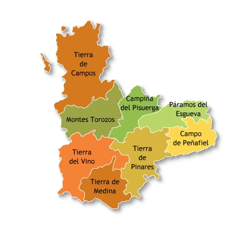
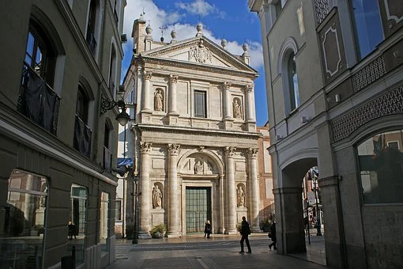

PROVINCIASAVILABURGOS LEON PALENCIA SALAMANCA SEGOVIA SORIA ZAMORA ENLACES EXTERNOS VOLVER AL INCIO |
VALLADOLIDÍNDICE
1. LOCALIZACIÓNValladolid se encuentra en el centro de la comunidad 2. LOCALIDADES PRINCIPALESPrincipales ciudades: Valladolid, Laguna de Duero, Medina del Campo, Arroyo de la Encomienda, La Cistérniga, Tordesillas Ubicacion de Valladolid capital: 3. GEOGRAFÍA DE LA PROVINCIACoordenadas geograficas: Latitud: 41.6529, Longitud: -4.72839, 41° 39′ 10″ Norte, 4° 43′ 42″ Oeste Superficie: 19.745 hectáreas, 197,45 km² Altitud: 701 m. Clima: mediterraneo Tiempo actual de Valladolid: 4. HISTORIA 5. CULTURAActividades de Ocio y Cultura6. NATURALEZALugares de interes 7. TRADICIONES8. OTROS ASPECTOSCinco personajes relevantes de Valladolid |